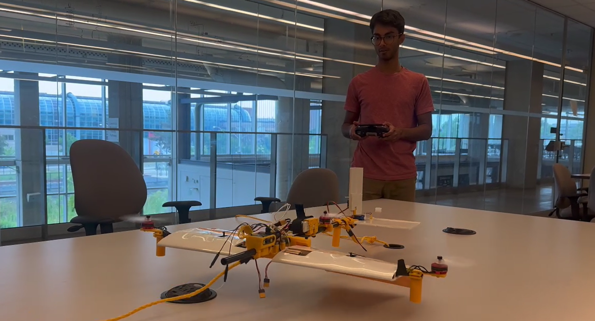
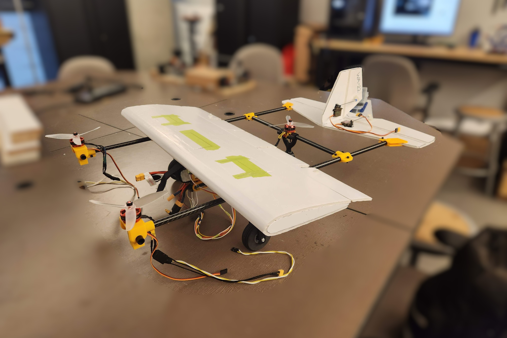
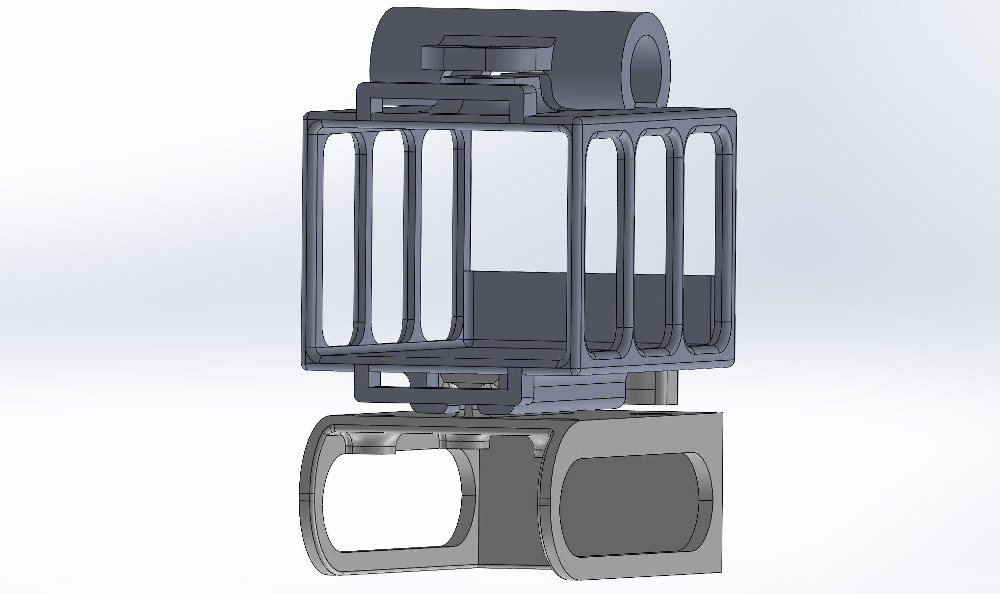

SAE 2026 VTOL Aircraft
Project Overview
The development of the WatArrow’s first tiltrotor VTOL aircraft to compete in the Advanced Class at SAE Aero Design 2026 was one of the first projects I oversaw while serving as the team’s Technical Director. My biggest contribution was to the design, fabrication, and assembly of the first 2 prototype aircraft. I also helped configure the avionics and ArduPilot for these 2 prototypes alongside Joshua Perry, Yang Li, and Riya Vaidya.
Prototype 1
As an initial proof-of-concept, I built a Frankensteined airframe using spare parts from previous aircraft. For example, I used the horizontal stabilizer of a larger aircraft as the wings for Prototype 1. This was acceptable because the goal of Prototype 1 was only to test tricopter hovering capabilities.

The short hover testing we performed with Prototype 1 helped us gain a better understanding of:
- Avionics requirements
- Tiltrotor design and placement
- Stability challenges
- Tricopter PID tuning
Prototype 2
With the knowledge gained from Prototype 1, I designed Prototype 2 with almost-entirely custom parts, such as a snap-fit wing I designed for easy installation onto an H-shaped carbon fiber frame.

One of the more complicated challenges I had to deal with was designing a mounting and wiring system for all the avionics components, since there were many more of them than on traditional fixed-wing aircraft due to the higher number of servos and motors. To simplify this, I designed 3D printed mounts that could be easily swapped out as needed. For example, I incorporated a dovetail joint into the flight computer mount, allowing it to easily separate from the battery mount that it was suspended from. The dovetail joint also featured a squeeze-to-release mechanism to help it lock in place during flight.

The bring-up process for systems like the motor-tilt mechanism also proved to be challenging, because it was my first time using a flight computer running ArduPilot. After lots of troubleshooting with the rest of the team, we were able to figure it out and conduct some more advanced vertical flight tests.
Ultimately, we did not end up using Prototype 2 for conventional flight, but it helped inform the design of future prototypes, culminating in the final WatArrow Advanced Class competition aircraft for SAE Aero Design 2026.